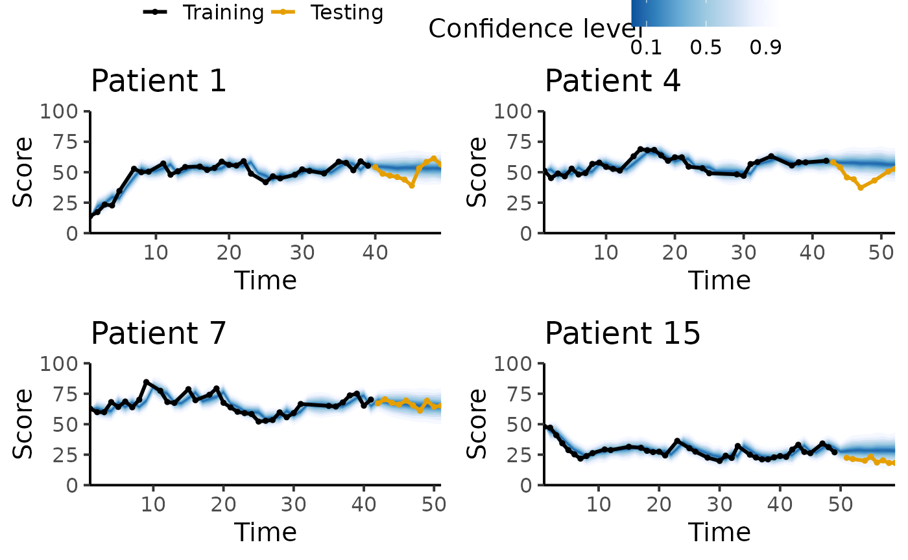

In this example, I will show how to use the continuous longitudinal models, i.e. the random walk model (RW), the exponential smoothing model (Smoothing), the autoregressive model of order 1 (AR1) and the mixed effect autoregressive model of order 1.
These models are Bayesian implementation of their off-the-shelf counterparts and are used as baselines to benchmark the performance of other models. In our context, we work with score defines between 0 and a maximum value max_score. As a result, while the models are trained assuming a likelihood from a unbounded distribution, predictions from these models are truncated for proper evaluation. This mismatch would result in biases if we try to generate fake data from the prior predictive distribution and fit the fake data to recover the parameters of the model.
library(EczemaPred)
# library(HuraultMisc)
library(dplyr)
library(tidyr)
library(ggplot2)
library(cowplot)
library(rstan)
options(mc.cores = parallel::detectCores()) # Parallel computing
set.seed(2021) # For reproducibility
max_score <- 100
mdl_names <- c("RW", "Smoothing", "AR1", "MixedAR1")Generate fake data
As the model we considered are supposed to be used as baselines, we generate fake data from a different generating process. To enforce the constrain that the data will be bounded between 0 and 100, we generate data on a logit scale, take the inverse logit and multiply it by 100. We also add missing values to make the data more representative to what is observed in real life.
N_patient <- 20
t_max <- rpois(N_patient, 50)
y0 <- rbeta(N_patient, 5, 5)
mu_alpha <- 0.8
phi_alpha <- 10
alpha <- 0.8
b <- rnorm(N_patient, 0, 0.1)
sigma <- 0.2
df <- lapply(1:N_patient,
function(i) {
y <- rep(NA, t_max[i])
err <- rnorm(t_max[i] - 1, 0, sigma)
y[1] <- HuraultMisc::logit(y0[i])
for (t in 2:t_max[i]) {
y[t] = alpha * y[t - 1] + b[i] + err[t - 1]
}
y <- HuraultMisc::inv_logit(y) * max_score
t_mis <- generate_missing(t_max[i], type = "markovchain", p_mis = 0.2, p_obs_obs = 0.8)
y[t_mis] <- NA
data.frame(Patient = i,
Time = 1:t_max[i],
Score = y)
}) %>%
bind_rows()We can inspect the time-series of a handful of patients.
smp_pt <- sort(sample(1:N_patient, 4))
lapply(smp_pt,
function(pid) {
df %>%
filter(Patient == pid) %>%
ggplot(aes(x = Time, y = Score)) +
geom_line() +
geom_point() +
coord_cartesian(ylim = c(0, max_score)) +
labs(title = paste0("Patient ", pid)) +
theme_bw(base_size = 15)
}) %>%
plot_grid(plotlist = ., ncol = 2)Finally, we split the data into a training and a testing set, where the testing set would correspond to the last observations of each time-series.
horizon <- 10
df <- df %>%
drop_na() %>%
group_by(Patient) %>%
mutate(LastTime = max(Time) - horizon,
Label = case_when(Time <= LastTime ~ "Training",
TRUE ~ "Testing")) %>%
ungroup()
train <- df %>% filter(Label == "Training")
test <- df %>%
filter(Label == "Testing") %>%
mutate(Horizon = Time - LastTime)Fit models
We fit the different models to the data, and inspect whether there were any divergences during sampling.
res <- lapply(mdl_names,
function(mdl) {
model <- EczemaModel(mdl, max_score = max_score, discrete = FALSE)
fit <- EczemaFit(model,
train = train,
test = test,
chains = 1,
refresh = 0)
diag <- data.frame(Divergences = get_num_divergent(fit),
MaxTreeDepth = get_num_max_treedepth(fit),
Model = mdl)
perf <- test %>%
add_predictions(fit, discrete = FALSE, include_samples = FALSE) %>%
mutate(Model = mdl)
return(list(Fit = fit,
Diagnostics = diag,
Performance = perf))
})
diag <- lapply(res, function(x) {x$Diagnostics}) %>% bind_rows()
perf <- lapply(res, function(x) {x$Performance}) %>% bind_rows()
knitr::kable(diag)| Divergences | MaxTreeDepth | Model |
|---|---|---|
| 0 | 0 | RW |
| 0 | 0 | Smoothing |
| 0 | 0 | AR1 |
| 0 | 0 | MixedAR1 |
Then, we compute the log predictive density for each observation for the different models and plot the average performance. To give a sense of scale, we add the performance of a uniform forecast and a historical forecast to the plot.
perf <- bind_rows(perf,
add_uniform_pred(test, max_score, discrete = FALSE) %>%
mutate(Model = "uniform"),
add_historical_pred(test, train, max_score, discrete = FALSE) %>%
mutate(Model = "historical"))
mean_perf <- perf %>%
group_by(Model) %>%
summarise(Mean = mean(lpd), SE = sd(lpd) / sqrt(n())) %>%
ungroup() %>%
mutate(Model = forcats::fct_reorder(factor(Model), Mean))
ggplot(data = mean_perf,
aes(x = Model, y = Mean, ymin = Mean - SE, ymax = Mean + SE)) +
geom_pointrange() +
labs(y = "lpd", x = "") +
theme_bw(base_size = 15)Here, the best model in terms of out-of-sample lpd is MixedAR1. We plot the posterior predictive trajectory of this model for a few patients to inspect how well it fits the data.
fit_best <- res[[which(mdl_names == best_model)]]$Fit
pl <- lapply(smp_pt,
function(pid) {
plot_ppc_traj_fanchart(fit_best, train = train, test = test, patient_id = pid, max_score = max_score) +
labs(title = paste0("Patient ", pid))
})
plot_grid(
get_legend(pl[[1]] + theme(legend.position = "top")),
plot_grid(plotlist = lapply(pl, function(x) {x + theme(legend.position = "none")}),
ncol = 2),
ncol = 1, rel_heights = c(.1, .9)
)